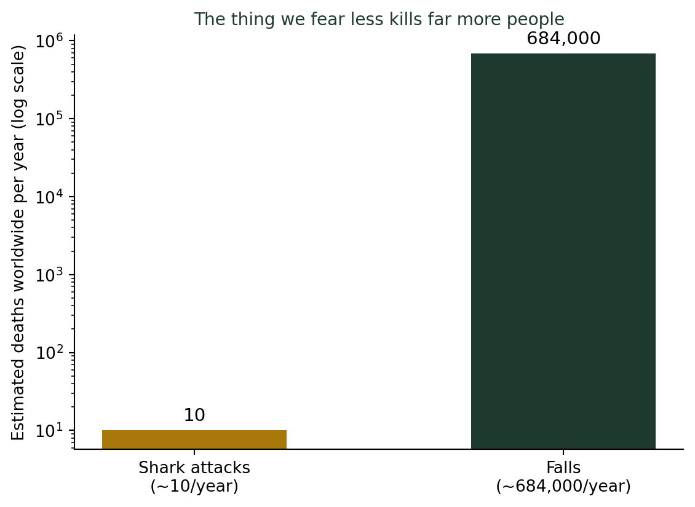
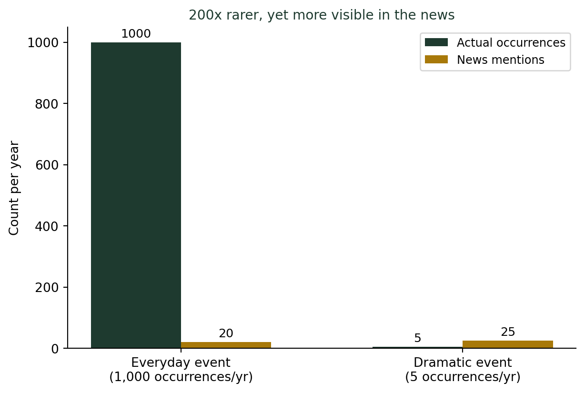

(사람의 직관은 왜 통계와 충돌하는가) 기억에 잘 남는 사건이 더 자주 일어난다고 느끼는 이유
통계기초
확률
행동통계
로또 1등에 당첨될 확률은 815만분의 1이다. 평생 벼락에 맞을 확률은 그보다 500배 넘게 높다. 그런데도 매주 로또를 사며 당첨을 상상하는 사람은 많아도, 벼락을 걱정하는 사람은 거의 없다. 뉴스에 잘 나오는 사건일수록 기억하기 쉽고, 기억하기 쉬운 사건일수록 더 자주 일어나는 것처럼 느껴진다.
로또는 상상하고, 벼락은 상상하지 않는다
매주 토요일 저녁, 로또 추첨 방송을 챙겨보며 1등을 상상하는 사람은 많다. 반면 오늘 하루 벼락에 맞을까 봐 걱정하며 외출하는 사람은 거의 없다. 그런데 두 확률을 나란히 놓으면 이 순서는 뒤집힌다. 로또 6/45에서 1등에 당첨될 확률은 정확히 \(\binom{45}{6} = 8,145,060\)분의 1이다. 반면 미국 국립기상청(NWS)이 추정하는 평생 벼락에 맞을 확률은 약 15,300분의 1이다.
벼락에 맞을 확률이 로또 1등 확률보다 500배 넘게 높은데도, 벼락을 걱정하며 사는 사람은 없다. 반대로 로또는 매주 수백만 명이 “이번엔 될지도 모른다”는 마음으로 산다. 이유는 명확하다. 로또 1등 당첨자는 매주 뉴스에 나오고, 당첨 판매점에는 “명당”이라는 팻말이 붙어 사람들이 줄을 선다. 반면 벼락에 맞은 사람의 사연은 개인 사고로 조용히 지나갈 뿐, 거의 보도되지 않는다. 우리가 실제로 두려워하거나 기대하는 크기는 실제 확률이 아니라, 그 사건이 얼마나 쉽게 머릿속에 떠오르는가로 결정된다. 이 현상에 심리학자 아모스 트버스키와 대니얼 카너먼은 가용성 편향(availability bias, availability heuristic)이라는 이름을 붙였다.
왜 “떠올리기 쉬움”이 “자주 일어남”으로 둔갑하는가
1973년 트버스키와 카너먼은 이런 실험을 했다. 사람들에게 영어 단어에서 K, L, N, R, V 같은 자음이 첫 번째 글자로 더 많이 쓰이는지, 세 번째 글자로 더 많이 쓰이는지 물었다. 대다수는 첫 글자 쪽이라고 답했다. 그런데 실제로 이 자음들은 세 번째 글자로 쓰이는 경우가 더 흔하다. 이유는 단순하다. 우리는 단어를 “K로 시작하는 단어”로는 쉽게 떠올리지만, “세 번째 글자가 K인 단어”로는 검색하듯 떠올리기 어렵다. 떠올리기 쉬운 정도가 실제 빈도를 대신해버린 것이다.
뉴스 보도도 똑같은 방식으로 작동한다. 자주 일어나지만 심심한 사건(낙상, 감기, 교통 정체)은 기사가 되지 않는다. 드물지만 극적인 사건(상어 습격, 항공기 사고, 이상동기 범죄)은 며칠씩 이어지는 특집 기사가 된다. 그 결과, 우리 머릿속에 저장되는 “사례의 개수”는 실제 발생 개수와 전혀 다른 비율로 쌓인다.

이 그림은 실제 통계가 아니라 메커니즘을 보여주기 위한 단순화된 모형이다. 일상적인 사건은 1,000번 일어나도 2%만 기사화되어 20건의 보도가 나온다. 반면 극적인 사건은 5번밖에 안 일어나지만 한 건당 후속 보도가 5건씩 붙어 25건의 보도가 나온다. 실제로는 200배 더 드문 사건이, 뉴스에서는 더 자주 등장하는 사건으로 뒤바뀐다. 우리는 뉴스에서 본 횟수를 실제 발생 빈도의 대용치로 쓰기 때문에, 이 역전이 그대로 체감 위험도의 역전으로 이어진다.
“요즘 세상이 흉흉하다”는 체감
한국에서도 비슷한 패턴이 반복된다. 이상동기 범죄나 전세사기처럼 자극적인 사건이 연달아 보도되면 “요즘 왜 이렇게 사건사고가 많지”라는 체감이 강해진다. 그런데 이런 체감과 실제 범죄 통계의 장기 추세가 반대로 움직이는 경우가 여러 조사에서 보고된다. 범죄가 실제로 늘었는지는 매번 공식 통계로 따로 확인해야 할 질문이지, “요즘 뉴스에 많이 나온다”는 인상만으로 답할 수 있는 질문이 아니다.
“요즘 자주 보인다”는 느낌을 검증하는 법
- 그 사건이 뉴스가 될 만큼 극적인가? 극적일수록 실제 발생 빈도보다 보도 빈도가 부풀려질 가능성이 크다.
- 비교 대상이 되는 “안 무서운” 사건의 실제 확률도 알고 있는가? 로또와 벼락처럼, 진짜 확률은 종종 가장 상상하지 않는 곳에 있다.
- “내 기억에 몇 건 떠오른다”는 것과 “실제 통계가 몇 건이다”는 것을 구분했는가? 전자는 언론 보도량과 개인적 경험에 좌우되고, 후자만이 진짜 빈도다.
더 깊이: 확률은 원래 “떠오르는 정도”가 아니라 “장기적 비율”로 정의된다
강의노트 〈수리통계학 1. 확률론 — 상대 빈도(Relative Frequency)〉는 확률을 \(P(A) = \lim_{n \to \infty} f/n\), 즉 시행을 무한히 반복했을 때 사건 \(A\)가 일어난 횟수의 비율로 정의한다. 뷔퐁이 동전을 4,040번, 피어슨이 24,000번 던져 상대빈도가 0.5 근처로 수렴하는 것을 직접 확인했다는 사례도 함께 소개한다. 가용성 편향은 바로 이 정의를 어기는 방식으로 작동한다. 사람들은 \(n\)번의 전체 시행 중 \(f\)번을 실제로 세는 대신, 머릿속에 쉽게 떠오르는 사례의 수로 그 비율을 대신 추정한다. 뉴스 보도처럼 표본 자체가 이미 극적인 사건 쪽으로 치우쳐 있다면, 그 편향된 표본에서 나온 “체감 빈도”는 강의노트가 정의하는 진짜 확률과 처음부터 다른 것을 재고 있는 셈이다.
결론: 무서운 것과 위험한 것은 다르다
이번 주 나흘 동안 다룬 핫핸드, 도박사의 오류, 생존자 편향, 평균으로의 회귀는 모두 “무작위성을 잘못 읽는” 오류였다. 가용성 편향은 조금 다르다. 무작위성이 아니라 기억이라는 필터를 잘못 읽는 오류다. 우리 기억은 모든 사건을 공평하게 저장하지 않는다. 극적이고, 최근이고, 감정을 자극하는 사건일수록 더 선명하게, 더 오래 남는다. 그 결과 “내가 자주 떠올릴 수 있는 것”과 “실제로 자주 일어나는 것” 사이에는 항상 간극이 생긴다. 로또 1등을 상상하기 전에, 벼락에 맞을 확률이 그보다 훨씬 높다는 사실을 떠올려 보는 편이 통계적으로는 더 정직하다.
참고 자료
- Tversky, A., & Kahneman, D. (1973). Availability: A heuristic for judging frequency and probability. Cognitive Psychology, 5(2), 207-232.
- Lightning Safety — National Weather Service
- 로또 6/45 — 위키백과
- Availability heuristic — Wikipedia